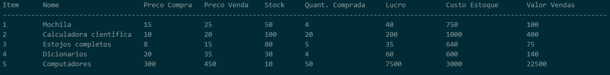

Sistema de gestão de vendas e stock para uma loja escolar
Usando C++, permite ao utilizador realizar várias operações fundamentais para a gestão diária de um negócio, neste caso utilizaremos o exemplo de uma loja escolar.
Menu:
- 1. Atualizar o estoque
- 2. Realizar uma venda
- 3. Mostrar um resumo dos produtos e das vendas
- 4. Sair do programa
Atualizar o estoque
Permite ao utilizador adicionar mais unidades a um produto existente ou introduzir um novo produto no sistema, incluindo detalhes como o nome, preço de compra, preço de venda e a quantidade em estoque.
Realizar uma venda
É um processo interativo onde o utilizador escolhe um ou mais produtos, especifica as quantidades a vender, e o sistema calcula o total a pagar. Se o pagamento for suficiente, o sistema atualiza o estoque e registra o valor das vendas. Se o pagamento for insuficiente, a venda é cancelada.
Mostrar o resumo
Fornece uma visão geral dos produtos, incluindo o custo total do estoque, vendas totais estimadas (baseadas no preço de venda atual e no estoque), e o total de vendas já realizadas.
Sistema inicial
Sistema final
.png)
.png)
.png)